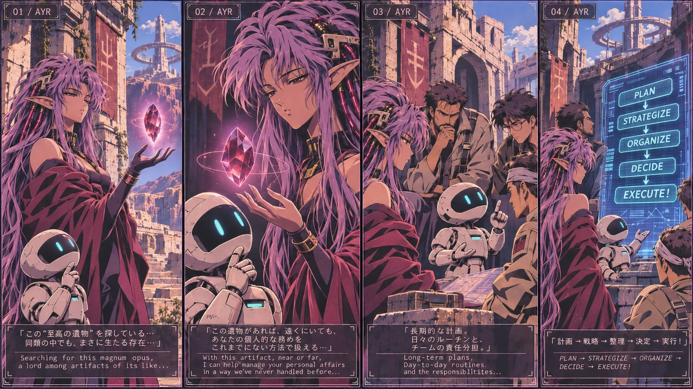
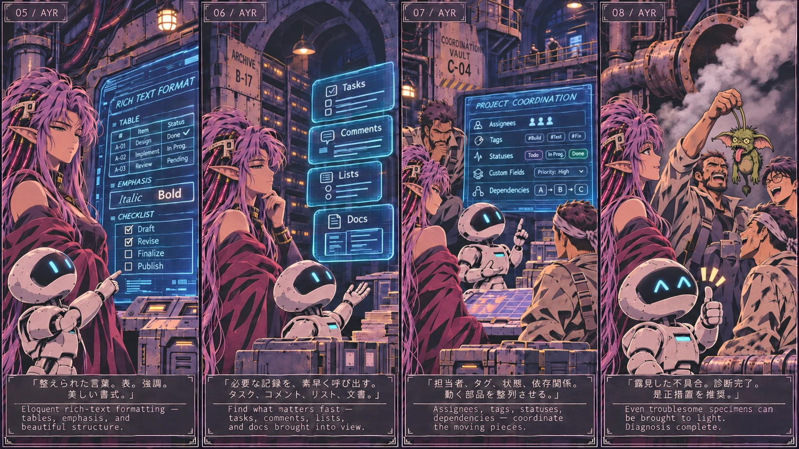

FIELD RECORD 003 AN UNUSUAL ARTIFACT
An artifact
for keeping order.
A small tale from Ayarime's world, accompanying the first public source release of ClickUp Serviteur MCP. Beneath the desert's old machinery, an unfamiliar little assistant reveals its talent for making complicated work manageable.
I / THE DISCOVERY
A peculiar inheritance.
What begins as a search for an extraordinary relic becomes a lesson in planning, delegation and the utility of an unassuming companion.


READ TRANSCRIPT — PLATES 01–04
01. Searching for this magnum opus, a lord among artifacts of its like…
02. With this artifact, near or far, I can help manage your personal affairs in ways previously unimaginable…
03. Long-term plans. Day-to-day routines. Team responsibilities.
04. PLAN → STRATEGIZE → ORGANIZE → DECIDE → EXECUTE!
II / THE WORK BELOW
A system takes shape.
In the maintenance vault beneath the temple, routine work grows more legible. Even a particularly troublesome gremlin eventually meets the engineers.


READ TRANSCRIPT — PLATES 05–08
05. Eloquent rich-text formatting — tables, emphasis and beautiful structure.
06. Find what matters fast — tasks, comments, lists and docs brought into view.
07. Assignees, tags, statuses and dependencies — coordinate the moving pieces.
08. Even troublesome specimens can be brought to light. Diagnosis complete.

GITHUB RELEASES
FROM THE WORKSHOP
FIRST PUBLIC SOURCE BETA 07 NOVEMBER 2026
ClickUp Serviteur MCP
v0.3.0-beta.1 · GITHUB PRERELEASE · NOT A DRAFT
Serviteur is an independent, self-hosted, OAuth-protected remote Model Context Protocol server, designed to let compatible AI clients work with individually authorised ClickUp Workspaces.
The public beta includes task and list operations, search, structured comments and verified user mentions, assignments, relationships, custom fields, time tracking and supported Docs/Chat operations. It also includes security guidance, installation documentation and tests.
This is a source beta, not a hosted subscription or a claim of complete ClickUp API coverage. Self-hosters configure their own Cloudflare Worker, OAuth credentials and Workspace permissions; no private tokens or workplace data are included.
Tag source: 7aadec22b326a5d9767d47762b506642a8c41ddc · MIT licensed. ClickUp Serviteur is not affiliated with or endorsed by ClickUp.
ClickUp is a trademark and service mark of Mango Technologies, Inc. DBA ClickUp, registered in the U.S. and in other countries. ClickUp and MCP logos are shown to identify the technologies involved; this independent release is not a ClickUp or MCP organisation partnership.